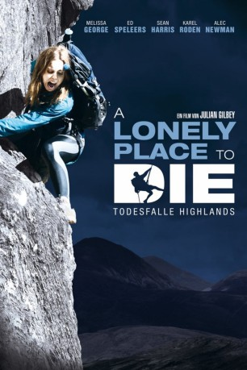

gesehen am 31.08.2016
gesehen am 31.08.2016Alternativ: A Lonely Place to Die gesehen am 31.08.2016
 
 IMDB-Wertung: 6.3 / 10
IMDB-Wertung: 6.3 / 10  Metascore:
Metascore: 
Unheimliche Laute hallen durch den einsamen schottischen Bergwald. Noch unheimlicher wird es, als die fünf Bergsteiger die Ursache entdecken: Ein kleines Mädchen wurde lebendig in einer Kiste vergraben, durch ein Atemrohr sind ihre Rufe nach draußen gedrungen. Wer kann so etwas Grausames getan haben? Anna spricht nur Kroatisch und kann nichts erzählen. Dem Kind muss so schnell wie möglich geholfen werden. Deshalb wollen Alison und Rob die Abkürzung über den senkrecht abfallenden "Devil s Drop" wagen, während die anderen sich mit Anna auf den meilenweiten Weg ins nächste Dorf machen. Doch die Kidnapper haben die Gruppe bereits im Visier und machen die einsame Wildnis zur Arena eines blutigen Überlebenskampfes ...
Jahr: 2011
Dauer: 99 Minuten
FSK: 18
Land: England Studio: Ascot Elite Entertainment GroupTonspuren: DD5.1 - , DD5.1 - ,
Untertitel: Deutsch,
Auflösung: 1080p (1920x800) Größe: 5601 MB
Genre: Abenteuer, Krimi, Thriller
Regisseur: Julian Gilbey
Drehbuch: Julian Gilbey, Will Gilbey
Soundtrack: Michael Richard Plowman
Darsteller:
 Melissa George als Alison
Melissa George als Alison Kate Magowan als Jenny
Kate Magowan als Jenny Douglas Russell als Hunter 1
Douglas Russell als Hunter 1 Sean Harris als Mr. Kidd
Sean Harris als Mr. Kidd Stephen McCole als Mr. Mcrae
Stephen McCole als Mr. Mcrae Karel Roden als Darko
Karel Roden als Darko Eamonn Walker als Andy
Eamonn Walker als Andy Paul Anderson als Chris
Paul Anderson als ChrisDatei: X:\FSK18-2011\Lonely Place to Die - Todesfalle Highlands, A (2011, FSK18, 1920x800).mkv seit 13.04.2015
Festplatte: FSK18
 Es gibt insgesamt 30 Filme in der Gruppe 'FSK18-2011'
Es gibt insgesamt 30 Filme in der Gruppe 'FSK18-2011'